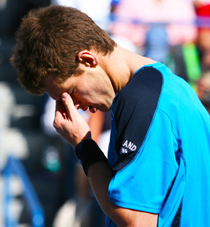
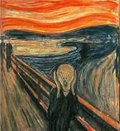
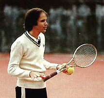
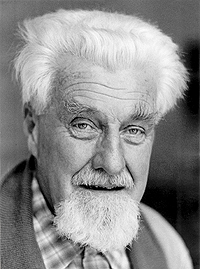
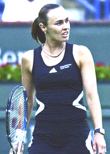
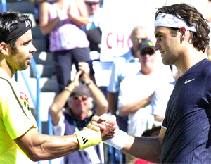

← Bài trước: Why Can't I Play the Way I Practice? | 🏠 Mental Game Trang chủ | Bài tiếp: → Why Emotions Can Be Counter Productive
Tại sao chúng ta muốn thắng?
Thư viện kiến thức quần vợt thống nhất — Cơ bản, Phân tích kỹ thuật, Thư viện tham khảo và nhiều hơn nữa
Tại sao chúng ta muốn thắng?
Bởi Allen Fox, Ph.D.
Giống như tất cả các loài xã hội, chúng ta được lập trình để cạnh tranh.
Con người tiến hóa để sống và làm việc trong nhóm. Chúng ta là một loài xã hội, giống như sói hoặc khỉ, và như vậy có một thứ bậc xã hội. Đây là một thứ bậc xã hội hoặc thứ hạng xã hội, và, giống như các loài khác, ai đứng trên ai cảm thấy quan trọng.
Đơn giản, chúng ta được lập trình di truyền để cạnh tranh với nhau để nâng cao thứ hạng của mình trên thứ bậc xã hội này. Các loài xã hội khác đạt được thứ hạng của họ thông qua việc chiến đấu (hoặc đe dọa chiến đấu). Chúng ta làm điều này bằng cách cạnh tranh thành công trong các lĩnh vực, một trong số đó là thể thao.
Ở mức cơ bản nhất, một trận đấu quần vợt cạnh tranh là một cuộc đấu tranh tượng trưng cho sự thượng vị, một khái niệm giải thích nhiều cảm xúc khó hiểu khác đang xoay quanh các trận đấu như vậy.
Quần vợt là một cuộc đấu tranh tượng trưng, vì bạn chỉ có thể đánh nhau. Trong quần vợt, mỗi người chơi đối đầu với thể chất, trí tuệ, ý chí, thần kinh, sự kiên cường và thậm chí tính cách của mình với một đối thủ đang làm điều tương tự khi họ đấu tranh để đạt được một quyết định. Trên sân, bạn có thể "cảm nhận" đối thủ của mình đang đẩy bạn xung quanh - cố gắng kiểm soát và thống trị bạn - trong khi bạn cũng làm điều tương tự để trả lại.

Không có cách nào tránh khỏi việc thua là đau đớn và cảm thấy cá nhân.
Tôi có thể nhớ lại từ thời thơ ấu những cảm giác lo lắng và sợ hãi tôi trải qua khi một người bạn đùa giỡn trong lớp của tôi đe dọa sẽ "đánh tôi" sau giờ học. Khi tôi ngồi không thoải mái trong ghế của mình, chờ trường học tan học, tôi cảm thấy lo lắng và không hề mong đợi thử thách vật lý sắp tới.
Nhiều năm sau, những cảm xúc này đôi khi xuất hiện trước các trận đấu quan trọng của giải đấu. Đặc biệt, tôi nhớ một buổi sáng trước trận chung kết quan trọng khi bầu trời đầy u ám với những cơn mưa rào nặng và mưa phùn, và có sự nghi ngờ ngày càng tăng về việc mưa có giữ được đủ lâu để chơi trận đấu hay không.
Tôi có những cảm xúc hỗn hợp. Mặt khác, tôi muốn ra ngoài để kết thúc nó; mặt khác, tôi hy vọng nó sẽ mưa và trận đấu sẽ bị hủy vì ngày hôm đó để tôi không phải chơi. Nhưng trong mọi trường hợp, tôi nhận ra những cảm xúc của lo lắng và sợ hãi giống như những gì tôi trải qua khi còn là một đứa trẻ trước khi phải đối mặt với người bạn đùa giỡn.
Và sự lo lắng của tôi về cuộc đấu vật vật lý không liên quan đến việc lo lắng về việc bị gãy mũi hoặc bị rơi răng. Tôi không lo lắng về tổn thương cơ thể. Tôi chỉ sợ bị "đánh bại," mặc dù tôi không thực sự biết điều đó có nghĩa là gì vào thời điểm đó.
Tôi có những hình ảnh mơ hồ về người bạn đùa giỡn sẽ kết thúc trên trên tôi và tôi thua và bị xấu hổ. Một sự sợ hãi tương tự bao trùm trận đấu chung kết, cũng liên quan đến sự không chắc chắn và/hoặc sợ hãi về ai sẽ kết thúc trên trên trong cuộc đấu tranh sắp tới để áp đặt ý chí của chúng ta lên nhau.

Sợ hãi xuất hiện trong mọi trận đấu, ngay cả khi thực sự không có gì để sợ.
Sợ hãi xuất hiện trong mọi trận đấu quần vợt. Giống như tất cả các cuộc đấu vật, có thực hay không, sợ hãi và căng thẳng là những phần không thể thiếu của phương trình. Đương nhiên, quần vợt chỉ là một trò chơi, và nếu bạn lùi một bước lại thì rõ ràng không có gì đáng sợ.
Nhưng trong những trận đấu căng thẳng, cạnh tranh gay gắt, nó cảm thấy quan trọng hơn thế. Nó cảm thấy cá nhân, và thua là đau đớn, đặc biệt nếu bạn đã dành nhiều hơn một nỗ lực tạm thời cho việc này.
Mặt khác, thắng là thoải mái và thỏa mãn và có thể nâng cao tâm trạng của bạn trong phần còn lại của ngày. Vì vậy, sự khác biệt về mặt cảm xúc giữa hai kết quả thay thế là đáng kể. Người chiến thắng cảm thấy được thỏa mãn, thậm chí là hào hứng, trong khi người thua cảm thấy bị hạ thấp, bị xấu hổ, có thể thậm chí còn bị xấu hổ một chút. Người chiến thắng đã chứng minh mình là người đứng đầu.
Sợ hãi đến từ việc không论 bạn cố gắng hết sức để thắng thì bạn vẫn có thể thua. Sự không thể kiểm soát kết quả cuối cùng, bất kể chuẩn bị hay nỗ lực, kết hợp với sự khác biệt đáng kể về mặt cảm xúc giữa thắng và thua có thể gây ra mức độ căng thẳng không thoải mái.
Sự khác biệt giữa thắng và thua gây ra mức độ căng thẳng không thoải mái.
Thắng thực sự có quan trọng không? Cuốn sách quần vợt được đọc nhiều nhất mọi thời đại là "The Inner Game" của Tim Gallwey. Điểm của nó là thắng không quan trọng, và những cảm giác tốt và thưởng thức quá trình là quan trọng hơn. Nó chỉ trích việc quan tâm đến các cú đánh và kỹ thuật và cho rằng những quan tâm như vậy thực sự cản trở sự xuất hiện của người chơi xuất sắc đã tồn tại bên trong.
Một phần nào đó, Gallwey đã đúng. Đương nhiên, thắng một trận đấu quần vợt (ngoại trừ cho những người chơi chuyên nghiệp) là không quan trọng trong tổng thể cuộc sống, và tập trung vào việc thắng trong quá trình cạnh tranh có thể khiến người chơi lo lắng và cản trở hiệu suất. Tôi không thể tranh luận với điều này.
Là một cuốn sách của những năm 1970, nó phù hợp với phong trào văn hóa đang nổi lên. Nó chủ yếu chống lại ý tưởng thành lập về việc làm việc chăm chỉ về kỹ thuật, kỷ luật và chơi để thắng. Những người chúng tôi đang ở thời điểm đó thấy nó hấp dẫn để từ bỏ các nguyên tắc truyền thống cũ buộc mũi chúng tôi vào cối xay và căng thẳng chúng tôi bằng cách đẩy chúng tôi để đạt được. Chúng tôi thích nghĩ rằng chúng tôi thông minh hơn những người giàu kinh nghiệm cũ đã phát triển các nguyên tắc thành lập. Vì thắng là khó để làm được, chúng tôi vui mừng khi học được rằng nó không quan trọng.

Tim Gallwey, kiến trúc sư của Inner Game, đã đúng về một số điều.
Giải Nobel
Không may, hệ thống thần kinh của chúng ta không nhất quán với lý thuyết này. Trong cuốn sách năm 1966 của mình, "On Aggression," nhà dân tộc học đoạt giải Nobel Konrad Lorenz kết luận, sau nhiều năm quan sát cẩn thận, rằng tất cả các loài động vật, đặc biệt là con đực, tự nhiên đấu tranh với nhau về tài nguyên. Các loài xã hội, bao gồm con người, cạnh tranh, chiến đấu hoặc đe dọa chiến đấu để nâng cao trạng thái xã hội của mình, trạng thái xã hội cao hơn cung cấp quyền truy cập lớn hơn vào lãnh thổ, thức ăn và, với con đực, vào phụ nữ.
Điều này có thể nghe khá xa lạ so với sân quần vợt, nhưng việc thắng các trận đấu quần vợt không bao giờ làm tổn hại đến tài khoản ngân hàng của Roger Federer (tức là lãnh thổ) hoặc sự hấp dẫn với phụ nữ. Và không cần phải nói rằng trong bất kỳ nhóm tay vợt nào, trạng thái xã hội cao nhất thuộc về người chơi thắng nhiều nhất, giống như trong một nhóm doanh nhân, trạng thái cao được tích lũy cho những người có nhiều tiền nhất.
Đương nhiên, có nhiều sự thật trong lý thuyết của Gallwey. Ví dụ, việc cải thiện kỹ năng quần vợt của mình là một điều thỏa mãn - trở nên thành thạo hơn. Là một hình thức sáng tạo, chúng ta đều cảm thấy hạnh phúc khi sử dụng nghệ thuật các khả năng của mình - đánh bóng sắc nét, di chuyển trên sân một cách mượt mà và cân bằng, nhanh chóng dự đoán các cú đánh của đối thủ và có chiến thuật hoạt động hiệu quả.

Konrad Lorenz: dân tộc học tiết lộ những sự thật mà tay vợt không thể bỏ qua.
Chúng ta được lập trình để cảm thấy hạnh phúc từ việc xây dựng những thứ - các dự án - nơi chúng ta trở nên tốt hơn ở một cái gì đó. Vì vậy, chúng ta thích quá trình cải thiện kỹ năng quần vợt của mình (hoặc bất cứ điều gì khác, ví dụ: chơi một nhạc cụ, nói một ngôn ngữ nước ngoài, hoặc tăng kích thước của tài khoản ngân hàng của chúng ta).
Những điều này là tự nhiên thú vị hơn việc chỉ thắng các trận đấu quần vợt, vì vậy rõ ràng là chúng ta có những bản năng và nhu cầu quan trọng khác ngoài việc chỉ đấu tranh và cạnh tranh để nâng cao trạng thái xã hội của mình. Nhưng Lorenz dường như mô tả chính xác phần đáng chú ý này của bản năng con người - rằng chúng ta được lập trình di truyền để muốn thắng các cuộc thi đấu với người khác - và dù chúng ta cố gắng bao nhiêu, cũng không thể mong muốn loại bỏ nó.
Phụ nữ so với Nam giới
Trong khi tìm kiếm câu trả lời, điều quan trọng là lưu ý rằng phụ nữ và nam giới cạnh tranh khác nhau. Phụ nữ được lập trình một phần nào đó khác với nam giới, và phần cạnh tranh của quần vợt khiến quá trình thi đấu trở nên phức tạp hơn đối với họ.

Đối đầu đơn thuần không phải là tự nhiên đối với phụ nữ.
Nam giới đã quen với việc chiến đấu và cạnh tranh từ thời thơ ấu. Đối đầu với nhau trong các cuộc thi đấu đầu đối đầu và cố gắng đánh bại nhau là tự nhiên đối với họ. Ngược lại, hầu hết phụ nữ có tính cách có thành phần nuôi dưỡng hơn, và phần cạnh tranh của quần vợt gây khó khăn cho nhiều người. Đối đầu với nhau một cách công khai không phải là tự nhiên đối với nhiều phụ nữ như nó là đối với nam giới.
Nhiều người chơi chuyên nghiệp thành công trên tour phụ nữ đã phải được đẩy vào quần vợt bởi các phụ huynh đầy tham vọng. Sau đó, họ được thúc đẩy bởi cùng những nhu cầu về trạng thái, thành tựu và phong cách sống như nam giới, nhưng cuộc sống trên tour phụ nữ khác biệt đáng kể so với tour nam giới.
Các nam giới tập luyện cùng nhau, thích cạnh tranh với nhau ngoài sân trong các trò chơi video, bóng bàn, bóng đá, darts, golf, v.v., và thường hòa thuận với nhau sau khi trận đấu giải đấu kết thúc. Họ có thể đánh đầu vào nhau trên sân và đi cùng nhau sau đó để uống một chút bia.
Với tour phụ nữ, điều này cá nhân hơn. Chúng không thường tập luyện cùng nhau, mà thích tập luyện trên sân với huấn luyện viên nam của mình. Chúng thích tập luyện hơn là chơi các set, và có xu hướng mạnh mẽ mà các sự thù địch phát triển trên sân trong các trận đấu sẽ tiếp tục ngoài sân.

Thắng không làm tổn hại đến trạng thái xã hội của Roger Federer.
Mặt khác, một số người rất đồng cảm với đối thủ của mình đến nỗi họ cảm thấy xấu hổ sau khi đánh bại họ, một sự việc hầu như không bao giờ xảy ra trong trò chơi nam giới. Tóm lại, phụ nữ thích thắng vì nhiều lý do như nam giới, nhưng không phải tất cả. Tình hình của họ phức tạp hơn, và phần cạnh tranh của quần vợt có thể khiến nhiều người tìm thấy phần cạnh tranh trực tiếp của đơn đấu không thoải mái. Thành phần cảm xúc thường mạnh mẽ hơn, cá nhân hơn và kéo dài hơn.
Lorenz đã đưa ra một quan sát khác quan trọng liên quan đến thành công trên sân quần vợt - rằng sự cạnh tranh và cạnh tranh luôn đi kèm với sợ hãi. Đương nhiên, bất kỳ ai đã cạnh tranh nghiêm túc đều biết rằng sợ hãi không phải là một người bạn tạm thời trên sân quần vợt, và một trong những điều kiện tiên quyết quan trọng để thắng nhiều trận đấu hơn là xử lý hiệu quả các tác động xấu của nó.
Mục tiêu của loạt bài viết này là giúp tay vợt xử lý hiện thực này, như nó ảnh hưởng đến chúng ta trên sân quần vợt. Nhiều điều tiếp theo sẽ được dành cho việc giảm bớt sợ hãi để thắng các trận đấu, bất chấp thực tế là chúng ta không bao giờ có thể loại bỏ nó hoàn toàn.
Bài viết này được trích từ cuốn sách mới của Allen, Tennis: Winning the Mental Match, sẽ có sẵn vào cuối năm 2010 trên Amazon và trên trang web mới của Allen, www.allenfoxtennis.net.
Đọc thêm từ Allen!
Hãy ghé thăm anh ấy tại www.allenfoxtennis.net

Thắng trận đấu tinh thần Dr. Allen Fox
Quần vợt là môn thể thao tinh thần khó khăn nhất do bản chất cá nhân của nó khiến thắng và thua cảm thấy quan trọng hơn chúng thực sự là. Trong cuốn sách mới này, Allen đưa ra các giải pháp đã được chứng minh của mình đối với các vấn đề như bị kẹt, giảm căng thẳng, kết thúc các trận đấu và phát triển tự tin. Dựa trên sự nghiệp chơi và huấn luyện thành công suốt đời, đây là một cuốn sách bắt buộc cho tất cả các tay vợt cạnh tranh.
Nhấp vào đây để đặt hàng.

Thắng có thể không phải là mọi thứ, nhưng Dr. Allen Fox chỉ ra rằng, nếu chúng ta trung thực với bản thân, thắng vẫn là điều đáng ưa thích hơn thua. Trong cuốn sách mới của mình, The Winner's Mind, Allen trình bày một kế hoạch bước theo bước đã được chứng minh để thành công trong bất kỳ nỗ lực nào của cuộc sống, dựa trên quan sát cá nhân và rất cá nhân của anh ấy về sự nghiệp của cả các tay vợt quần vợt thế giới và doanh nhân thành công.
Điểm cuối cùng là ngay cả khi bạn không phải là một nhà vô địch sinh ra - và chỉ một phần trăm nhỏ chúng ta là như vậy - bạn vẫn có thể sử dụng các chiến lược thành công của nhà vô địch để nghiêng lợi thế về phía bạn. Viết với sự trung thực và hài hước khắc nghiệt, Fox trình bày các đặc điểm tinh thần quan trọng của người chiến thắng trong thể thao và cuộc sống. Anh ấy giải thích vai trò quan trọng của trí tuệ hơn là cảm xúc. Anh ấy phân tích cuộc đấu tranh giữa tham vọng và sợ hãi và sự sợ hãi xấu xa và phổ biến đối với thất bại mà làm suy yếu rất nhiều người.
Anh ấy sau đó nêu cách đối mặt và vượt qua những sợ hãi này trong cuộc sống và sự nghiệp của bạn, ngay cả khi chúng ban đầu là vô thức. Phải đọc từ một trong những nhà phân tích xuất sắc nhất trong quần vợt và một người Phục hưng trong cuộc sống. Nhấp vào đây để đặt hàng.
Để mua cuốn sách này, bạn cũng có thể gửi một séc trị giá $17.95 cho Allen Fox, 1120 Inverness Place, San Luis Obispo, CA. 93401. Giá bao gồm phí vận chuyển.

Allen Fox PhD là một tay vợt chuyên nghiệp thế giới trước đây, một huấn luyện viên, một nhà tâm lý học và một trong những nhà phân tích sáng tạo và sâu sắc nhất trong quần vợt hiện đại. Một tay vợt hàng đầu ở Mỹ từ những ngày huy hoàng trước khi quần vợt mở, Fox đã chơi nhiều người chơi huyền thoại, bao gồm Roy Emerson, Rod Laver, Stan Smith và Arthur Ashe. Tại Pepperdine, anh ấy đã phát triển chương trình quần vợt nam thành một đối thủ hàng đầu cho các danh hiệu quốc gia, và đã cho Brad Gilbert những hiểu biết trở thành cơ sở cho "Winning Ugly". Cuốn sách Think to Win của anh ấy là một tác phẩm kinh điển hiện đại. Anh ấy cũng đã xuất hiện trong một loạt video được ca ngợi, bao gồm Pro Secrets of Match Play và Allen Fox's Ultimate Tennis Lesson.
Nguồn: tennisplayer.net lưu trữ — Why Do We Want to Win.docx (Thư viện giảng dạy của John Yandell, 2002-2022). Trích xuất và hiển thị dưới dạng HTML cho Tennis Future Lab.